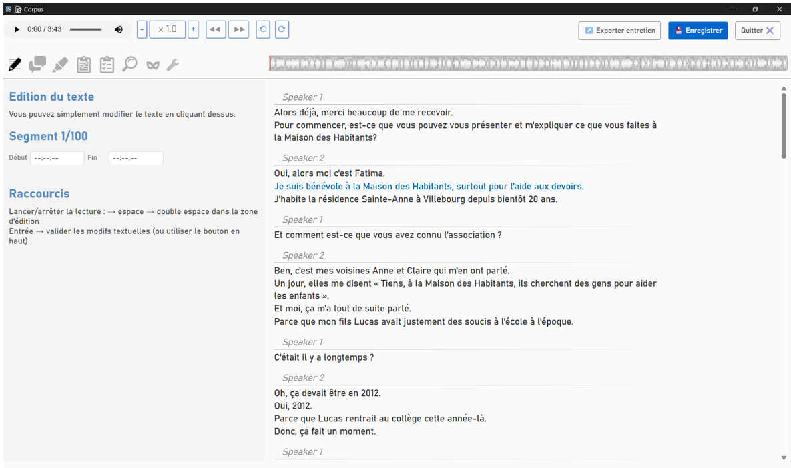
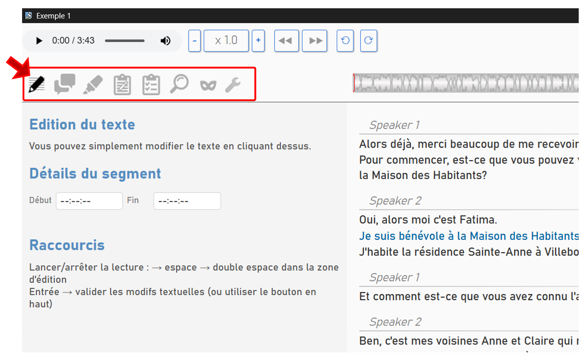

Fonctionnement général de la fenêtre d'édition
La fenêtre d'édition mélange un traitement de texte et un lecteur audio. Les deux sont synchronisés, ce qui rend très facile la relecture/réécoute d'un passage. Si vous cliquez sur une partie du texte, le lecteur audio se positionne à la position équivalente (selon la qualité du maillage chronométrique) et réciproquement.

Contrôle du lecteur audio
Le lecteur audio se contrôle simplement en cliquant sur le bouton play/pause mais il existe des raccourcis clavier :
- Si vous n'êtes pas en train d'éditer le texte (le curseur n'est pas dans la zone d'édition de la transcription) : barre d'espace
- Si vous êtes en train d'éditer le texte, tapez deux fois de manière rapprochée sur la barre d'espace.
Les différents modes
Dans la fenêtre d'édition, vous pouvez faire plusieurs choses différentes. Editer le texte, corriger les tours de parole, coder certains passages, pseudonymiser etc.
Pour clarifier ces différentes tâches, différents « modes » sont à votre disposition, accessible via les onglets sur le côté gauche de la fenêtre d'édition.
Chaque « mode » affiche un panneau latéral spécifique.
